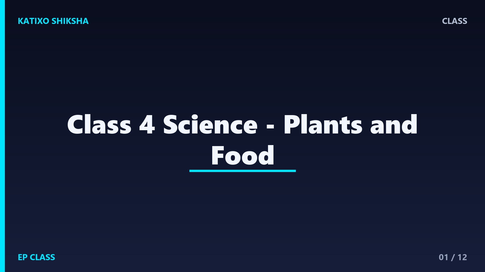

Class 4 Science - Plants and Food

Slide 1Plants are living things. They grow, breathe, need water, need sunlight, and make new plants. Some plants are tiny herbs, some are shrubs, and some become tall trees. When we study plants, we learn how life begins from seeds and how green leaves help the plant survive.

Slide 2A plant has many parts, and each part has a job. Roots hold the plant in the soil and take in water. The stem carries water and supports the plant. Leaves make food. Flowers and fruits help many plants produce seeds.

Slide 3Roots usually grow below the soil. They hold the plant firmly, like an anchor. Roots also absorb water and minerals from the soil. Some roots, like carrot and radish, store food. That is why we can eat them as vegetables.

Slide 4The stem works like a pipe inside the plant. It carries water from roots to leaves and food from leaves to other parts. Some stems are soft and green. Some stems are hard and woody, like the trunk of a tree.

Slide 5Leaves are called food factories of plants. They use sunlight, water, and air to make food. This process is called photosynthesis. For Class 4, remember the simple idea: green leaves use sunlight to prepare food for the plant.

Slide 6A seed can grow into a new plant when it gets air, water, and warmth. The baby plant coming out of a seed is called germination. Try keeping soaked seeds on wet cotton and watch them grow slowly.

Slide 7Many plants have flowers. Flowers may become fruits. Fruits protect seeds inside them. When seeds reach soil, they may grow into new plants. This is how many plants continue their life cycle again and again.

Slide 8Plants give us cereals, pulses, fruits, vegetables, spices, oil, tea, coffee, and sugar. Rice and wheat are cereals. Gram and lentils are pulses. Fruits and vegetables help us stay healthy because they contain vitamins and minerals.

Slide 9Plants do not give only food. They give wood, cotton, paper, medicines, rubber, shade, and clean air. Trees also give homes to birds and insects. Protecting plants means protecting life around us.

Slide 10Grow one small plant in a pot. Give it enough water and sunlight. Do not overwater it. Observe its height every few days. Draw what you see in a notebook. This simple activity makes you a young scientist.
Slide 11Do not think all plants are the same. Some plants live in water, some in deserts, and some in cold places. Do not think only flowers are important. Roots, stems, leaves, fruits, and seeds all have useful jobs.

Slide 12Let us revise. What do roots do? Which part makes food? What does a seed need to grow? Name two foods we get from plants. Why should we protect trees? If you can answer these, you understand plants well.